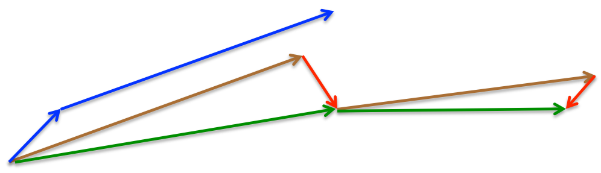

Welcome to @RichardSWheatley's site on Gradient Descent algorithms.
In this instance, we will be considering only the supervised learning aspect. My job provides me with hundreds of datasets to work with. Almost all these training sets will yield good results. The question is always whether we need to modify our learning rates or decay rates for a specific training set. I will show here that the current methods, including the latest algorithms based strictly upon mathematical principles, do not fulfill our needs and therefore there remains a problem that needs to be addressed.
Gradient Descent is a first-order approximation algorithm. It is a minimization algorithm that best operates on a convex or pseudo-convex Cost Function. This cost function is typically predefined although (@RichardSWheatley) has found that creating a convex Cost Function more specific to the tailored data can improve the results if the intended shape of the output is well-known.
Notation used throughout: $\theta$ is the parameter vector, $J(\theta)$ the cost, $g_t = \nabla_\theta J(\theta_t)$ the gradient at step $t$, and $\alpha$ (in some sections $\eta$) the learning rate. $n$ is the number of training points and $b$ a mini-batch size.
- Batch Gradient Descent
- Mini-Batch Gradient Descent w/ Randomized Size Constraint
- Stochastic Gradient Descent
- SGD with Momentum
- Nesterov Momentum SGD
- Averaged SGD
- AdaGrad
- RMSProp
- Adam
- Mini-Batch Descent Beyond My Bench: Where It Shows Up
- Which Method, When: A Cheat Sheet
- Updates That Make Mini-Batch Descent More Valuable
- Further Reading
Batch Gradient Descent
In general, we have some set of equations that we are trying to solve. The Standard way to solve for this is by using Iterative Least-Squares Cost function technique. This technique involves having a Cost function $J(\mathbf{\theta})$ that makes the problem convex. It is generally practiced (for the datasets I am using) that $$J(\mathbf{\theta}) = \frac{1}{2}\sum_{i=1}^n (h_\theta( \mathbf{x}^{(i)} ) - y^{(i)})^2$$ where $$h_\theta(\mathbf{x}^{(i)}) = \theta^\intercal \mathbf{x}^{(i)}$$
The "batch" part means every update uses every point in the training set. Each iteration takes one step of size $\alpha$ straight down the full gradient: $$\theta_{t+1} = \theta_t - \alpha \nabla_\theta J(\theta_t) = \theta_t - \alpha \sum_{i=1}^{n} \left(h_\theta(\mathbf{x}^{(i)}) - y^{(i)}\right) \mathbf{x}^{(i)}$$ On a convex cost this walks directly toward the minimum with no noise in the direction, which is the good news. The bad news is the price per step: a full pass over all $n$ points for every single update. When $n$ is large — or when, as in my case, the sum has to run on a small processor between other real-time work — that per-step cost is the whole problem, and it is what every other method on this page is trying to buy down.
Mini-Batch Gradient Descent w/ Randomized Size Constraint
During my testing, I found that running gradient descent was causing some issues with having to sum the gradient term over the entire dataset. One way to circumvent this is to run the gradient descent on a smaller subset of the data. To remove bias, I randomized the number in the subset and also randomized the data itself.
The textbook mini-batch update draws a random subset $\mathcal{B}_t$ of fixed size $b$ each step and uses it as a stand-in for the full sum: $$\theta_{t+1} = \theta_t - \frac{\alpha}{b} \sum_{i \in \mathcal{B}_t} \nabla_\theta J_i(\theta_t)$$ where $J_i$ is the cost on point $i$ alone. The subset average is an unbiased estimate of the true gradient, and its variance shrinks roughly like $1/b$: bigger batches give smoother steps, smaller batches give cheaper ones. My variant adds one twist — the batch size itself is drawn fresh each iteration, $b_t \sim \mathrm{Uniform}\{b_{\min}, \ldots, b_{\max}\}$, along with the membership of the batch. The step cost and the noise level therefore jitter from iteration to iteration instead of being fixed by a single tuning knob.
I picked a minimum and maximum mini-batch size for the randomization and then ran through a couple of datasets. Through trial and error, I was able to find that this method worked the best for my data even beating out Nesterov's method. This will not work for large datasets but in my case, large datasets are in the 50-100 range. This method also means that I need to store the full dataset as opposed to Stochastic Gradient Descent where you are truly just taking a new sample and tossing it after you get the data. The reason for this method is that we need the points kept to be able to test the accuracy of the convergence once the algorithm has been stopped.
Essentially I am trading data in and out of the training set to improve accuracy but still trying to preserve a short convergence time. This algorithm will not benefit from online learning since the amount of data is small and can easily be stored in RAM (6 -> 64-bit doubles per point).
Let me be clear. I have almost an equal complexity in the features I am trying to capture than in the amount of information stored in the dataset itself. For the sake of my work, I am going to keep that part private. (I like my job).
Stochastic Gradient Descent
Stochastic Gradient Descent is more of a real-time (online) gradient descent method. It does not require the summation of the gradient term over all of the points in the list to move one step. It allows for a more real-time update in that you will update the gradient with each point. Each step uses a single point $i$, drawn at random (or arriving from the stream): $$\theta_{t+1} = \theta_{t} - \alpha \nabla_\theta J_i(\theta_t)$$ In expectation this follows the same downhill direction as batch descent, $\mathrm{E}[\nabla_\theta J_i(\theta)] = \frac{1}{n}\nabla_\theta J(\theta)$, but any individual step can point well off to the side — SGD converges by averaging out its own noise over many cheap steps. It is the $b=1$ end of the mini-batch spectrum.
This may not be preferential in all cases, but it does work with very large datasets or in the case where you might be limited in the number of bits of the system. (16-bit vs 32-bit or 64-bit)
SGD with Momentum
Stochastic Gradient Descent is a good method in and of itself but there are cases where it takes a while to converge. An example of when this method is needed is if the convex function in a particular example has a long, shallow ravine with steep walls leading to the optimum. SGD without momentum will tend to "bounce" back and forth down the steep sides rather than converge on the optimum.
Stochastic gradient descent with momentum remembers the update $\Delta\theta$ at each iteration, and determines the next update as a convex combination of the gradient and the previous update: $$\begin{align} v &= \gamma v + \alpha \nabla_{\theta} J(\theta) \\ \theta &= \theta - v \end{align}$$ The velocity $v$ accumulates the components of the gradient that keep agreeing step after step (along the ravine floor) and cancels the components that keep flipping sign (across the ravine walls). $\gamma$ is typically set around 0.9.
Nesterov Momentum SGD
Nesterov momentum is a small reordering of classical momentum with an outsized payoff: look before you leap. Classical momentum measures the gradient where you are standing and then adds the accumulated velocity on top. Nesterov momentum first jumps ahead along the accumulated velocity to $\theta - \gamma v_{t-1}$ — where momentum is about to carry you anyway — and measures the correcting gradient there:
$$\begin{align} v_{t} &= \gamma v_{t-1}+ \eta \nabla_\theta J(\theta - \gamma v_{t-1}) \\ \theta &= \theta - v_{t} \end{align}$$

If the velocity is about to overshoot the minimum, the look-ahead gradient already points back and cancels part of the jump — classical momentum only finds that out on the following step. In the smooth convex setting, the deterministic version of this idea is Nesterov's accelerated gradient method, which improves the convergence rate from $O(1/t)$ for plain gradient descent to $O(1/t^2)$; the momentum form above is the practical stochastic cousin of that method. For my datasets it was the strongest of the standard methods — it took the randomized-size mini-batch scheme above to beat it.
Averaged SGD
Averaged SGD (Polyak–Ruppert averaging) is the cheapest upgrade on this whole page. Run plain SGD exactly as before, but report the running average of the iterates instead of the last iterate: $$\bar{\theta}_t = \frac{1}{t}\sum_{k=1}^{t} \theta_k \qquad \text{or, incrementally,} \qquad \bar{\theta}_t = \bar{\theta}_{t-1} + \frac{1}{t}\left(\theta_t - \bar{\theta}_{t-1}\right)$$ The picture to have in mind: near the minimum, SGD stops descending and starts rattling around the optimum in a noise ball whose radius is set by the learning rate and gradient variance. The individual iterates orbit the answer; their average sits near its center. Polyak and Juditsky (1992) showed that with a slowly decaying step size, the averaged iterate is asymptotically as statistically efficient as far more expensive second-order methods — you get Hessian-quality estimates from a first-order loop.
Practical notes: start averaging after a burn-in (averaging in the early, far-from-optimum iterates just drags the estimate backward — averaging over the tail half of the run is a common default), and note the implementation cost is one extra accumulator per parameter and one multiply-add per step. That price is payable even on a Cortex-M. It also composes with everything else here: the randomized-size mini-batch scheme above can keep its noisy, cheap steps and simply hand the average to the caller at the end.
AdaGrad
AdaGrad (Duchi, Hazan & Singer, 2011) gives every parameter its own learning rate, set automatically from that parameter's own gradient history. Accumulate the squared gradients coordinate-wise and divide the step by their square root: $$G_t = G_{t-1} + g_t \odot g_t \qquad \theta_{t+1} = \theta_t - \frac{\eta}{\sqrt{G_t + \epsilon}} \odot g_t$$ Coordinates that fire rarely or gently keep a large effective step; coordinates that fire hard and often get throttled. That makes AdaGrad the natural choice when features live on wildly different scales or appear with wildly different frequencies (sparse features especially). Recall the hand-scaling I had to do for RMSProp below — dividing inputs by 1000, re-scaling some outputs — AdaGrad is the algorithm that automates precisely that kind of bookkeeping, which is why I should have written this section long ago.
Its known flaw is the same accumulation that gives it its power: $G_t$ only ever grows, so the effective learning rate decays monotonically toward zero and the algorithm can strangle itself before it finishes converging on long runs. RMSProp, next, is AdaGrad with the lifetime sum swapped for an exponential moving average — that one change is the whole difference between the two methods.
RMSProp
RMSprop is an adaptive learning rate method proposed by Geoff Hinton. I specifically like this alternative although I would only use it if I had more time or specifically more CPU power than a standard ARM microcontroller.
RMSprop is defined mathematically below:
$$E[g^2]_t = \gamma E[g^2]_{t-1} + (1 - \gamma) g^2_t$$
$$\theta_{t+1} = \theta_{t} - \dfrac{\eta}{\sqrt{E[g^2]_t + \epsilon}} g_{t}$$
RMSprop divides the learning rate by an exponentially decaying average of squared gradients. Hinton suggests $\gamma$ to be set to 0.9, the learning rate $\eta$ set to 0.001 and $\epsilon$ set to $10^{-8}$.
This algorithm did seem to make a few improvements, but I had to modify the data as follows:
- normalize the input data to +/-1.0
- in my case, I divided the data by 1000 which normalizes between +/- 3.0
- renormalize "some" of the outputs
- there are some linear components that needed a simple *1000 on the output, while others are squared components.
- The linear components can be left unmodified as long as the inputs are stored as normalized; however, the squared components need to be fixed. (Data still needs to be tested for correctness)
Adam
'Adam' (for Adaptive Moment Estimation, Kingma & Ba, 2014) is an update to ''RMSProp'' optimizer. In this running average of both the gradients and their magnitudes are used. The three equations that define this optimizer is as follows, $$m(w,t):=\beta_1 m(w,t-1) + (1 - \beta_1) \nabla Q_i(w)$$ $$v(w,t):=\beta_2 v(w,t-1) + (1 - \beta_2) (\nabla Q_i(w))^2 $$ $$\hat{m}(w,t):=\frac{m(w,t)}{(1 - \beta_1^t)}$$ $$\hat{v}(w,t):=\frac{v(w,t)}{(1 - \beta_2^t)}$$ $$w:=w-\frac{\eta}{\sqrt{\hat{v}(w,t)} + \epsilon} \hat{m}(w,t)$$ where, $\beta_1 , \beta_2$ are two forgetting factors of the algorithm, respectively for gradients and magnitude of gradients.
I truly did not see any improvement using Adam on my datasets although I need to reiterate that my datasets are relatively small, and my Convex Cost function is non-standard. I have not seen Adam typically run on Cost functions other than the standard one shown in the opening statements above. Perhaps an article for another day.
A postscript to that observation: it was later shown that Adam's original convergence argument was flawed and that there are convex problems on which Adam provably fails to converge (Reddi, Kale & Kumar, 2018). A small underperformance on a non-standard convex cost is, at minimum, consistent with that finding. The repaired variants (AMSGrad, AdamW) are covered in the updates section below.
Mini-Batch Descent Beyond My Bench: Where It Shows Up
It would be fair to read the sections above and conclude that randomized mini-batch descent is a niche trick for one engineer's 50–100-point calibration sets. It is not. "Estimate the gradient from a subset, take a step, resample" is one of the most widely reused patterns in computational science, and in several fields it displaced the full-batch method that everyone had been using. A tour, with what each field was using and where mini-batch turned out to be the better tool:
Deep learning. Mini-batch is not merely used here — it is the default to the point that "SGD" almost always means mini-batch SGD. The fit is hardware-shaped: a batch of 32–512 samples turns the gradient computation into dense matrix-matrix work that saturates a GPU, and batch normalization literally requires batch statistics to exist. The interesting reversal is which optimizer sits on top. Most practitioners reach for Adam by default, yet plain mini-batch SGD with momentum and a decent schedule matches or beats adaptive methods on generalization in many vision benchmarks (Wilson et al., 2017) — most landmark convnets were trained with exactly the momentum method described a few sections up. The default is not always the best available choice, which is this whole site's thesis in one sentence.
Embedded calibration and system identification — my corner. The conventional tools here are the normal equations, recursive least squares, or Levenberg–Marquardt. All three want matrix storage and a solve: $O(d^2)$ memory and an $O(d^3)$ factorization, plus a Jacobian if you are doing LM. Mini-batch descent needs the parameter vector, one small batch, and nothing else — no factorization to schedule around real-time interrupts, and graceful behavior when the cost function is a hand-built convex shape rather than a least-squares form (LM does not even apply then). There is also a quieter advantage over the deep-learning defaults: on a microcontroller, optimizer state is real money. Adam carries two extra state vectors ($m$ and $v$ — triple the RAM per parameter), RMSProp and AdaGrad one each. Plain mini-batch descent carries zero, and with Polyak averaging, one. When parameters live in a few KB of retained SRAM, that is frequently the deciding line, and it is a reason the simple method is more useful here than the sophisticated ones others default to.
Medical image reconstruction. The cleanest proof that mini-batching is a general idea, not a deep-learning idea: PET and SPECT scanners reconstruct images by maximum-likelihood EM, and the clinical standard since the 1990s is ordered-subsets EM (Hudson & Larkin, 1994) — each update uses only a subset of the projection data. That is mini-batching by another name, it delivered roughly an order-of-magnitude speedup over full-batch EM, and it is running in hospitals right now.
Adaptive filtering and DSP. The classic LMS filter (echo cancellation, equalization, beamforming) is per-sample SGD wearing a signal-processing hat. Block LMS processes a buffer of samples per update — a mini-batch — and in its FFT-based fast form cuts the arithmetic per sample dramatically while enabling SIMD/DMA-friendly buffering. Anyone updating filter taps from a codec's DMA buffer on an ARM part is doing mini-batch gradient descent, whether they call it that or not.
Recommender systems. Matrix factorization at Netflix-Prize scale was won largely by SGD-family solvers streaming over ratings in small batches, against the incumbent alternating least squares which refits entire factor matrices per sweep. Mini-batch updates handle a firehose of new ratings incrementally; a full ALS refit cannot run per-event.
Federated learning. When the data cannot leave the devices (phones, wearables, medical sensors), the standard algorithm — FedAvg (McMahan et al., 2017) — has each client run several local mini-batch steps and ships only the resulting parameters for averaging. The mini-batch structure is what makes the communication budget workable; the full-gradient-per-round alternative (FedSGD) costs an order of magnitude more rounds.
Bayesian inference. Stochastic variational inference (Hoffman et al., 2013) applies mini-batch natural-gradient steps to the variational objective and took topic models from tens of thousands of documents (the full-batch ceiling) to millions. Even MCMC samplers picked the trick up: stochastic-gradient Langevin dynamics (Welling & Teh, 2011) runs a sampler on mini-batch gradients plus injected noise.
Reinforcement learning. Policy-gradient methods estimate the gradient from a finite batch of sampled trajectories by construction — there is no "full batch" to fall back on, because the dataset is whatever you rolled out. Modern algorithms like PPO (Schulman et al., 2017) explicitly sweep mini-batches over the rollout buffer for several epochs per update.
The through-line: mini-batch descent wins wherever per-update cost, memory, or data movement is the binding constraint — which is most places — and the noise it introduces is either averaged away cheaply or actively useful. Full-batch methods hold the advantage only when the dataset is small, the cost is smooth, and nothing constrains the per-step budget; second-order and least-squares solvers additionally demand that the cost have the right algebraic shape. My datasets are small, but my per-step budget and my hand-shaped cost functions are exactly the constraints in the list — which is why the mini-batch scheme beats the "proper" small-data tools on my bench.
Which Method, When: A Cheat Sheet
| Your situation | Reasonable first choice |
|---|---|
| Small dataset, smooth strongly convex cost, no per-step budget pressure | Full-batch GD — or skip descent entirely and solve the normal equations |
| Small dataset but tight RAM/CPU budget, custom convex cost (this site) | Mini-batch descent (randomized size), Polyak averaging on top; see SAGA below |
| Streaming or unbounded data, tiny memory | SGD with iterate averaging |
| Ill-conditioned cost with ravines | Momentum or Nesterov momentum |
| Sparse features or wildly mixed feature scales | AdaGrad |
| Non-stationary objective, online tuning | RMSProp |
| Deep network, minimal tuning budget | Adam/AdamW |
| Deep network, best final generalization, tuning budget available | Mini-batch SGD + momentum + cosine or cyclical schedule |
| Enormous batches across a cluster | Linear-scaled LR + warmup, LARS/LAMB |
Updates That Make Mini-Batch Descent More Valuable
The opening of this page complains that existing methods still leave the learning-rate and decay-rate tuning problem on the engineer's desk. Since the sections above were first written, a family of refinements has grown up around mini-batch descent that attacks exactly that problem — several of them slot directly into the randomized-size scheme described here.
1. Variance reduction: SAG, SAGA, SVRG. On a finite training set, plain mini-batch descent pays for its cheap steps with gradient noise that forces a decaying learning rate and yields a sublinear rate. Variance-reduced methods keep the cheap per-step cost but correct each mini-batch gradient using memory of older gradients, recovering the linear convergence of full-batch descent on strongly convex costs. SAGA stores one gradient per training point; SAG is its biased older sibling; SVRG (Johnson & Zhang, 2013) trades the per-point table for an occasional full-gradient snapshot. Here is the striking part for this site's regime: SAGA's storage cost — the usual argument against it — is $n$ gradients. With $n$ between 50 and 100 points, that table is a few kilobytes of doubles. Datasets like mine are the rare place where variance reduction is essentially free, and it directly removes the learning-rate-decay tuning the introduction complains about (constant step size, provably convergent). If I were revisiting the randomized-size experiment today, SAGA is the first thing I would test against it.
2. Adaptive batch sizes. My scheme randomizes the batch size uniformly; the modern refinements choose it deliberately. Byrd, Chin, Nocedal & Wu (2012) grow the batch when a variance test says the current batch's gradient estimate is too noisy to be trusted — small, noisy, cheap batches early; large, accurate ones near the optimum. Smith et al. (2018) push the same idea further: instead of decaying the learning rate on a schedule, increase the batch size on that schedule — same effective annealing, fewer parameter updates. Both are natural upgrades from uniform randomization: keep the jitter early, where the noise helps exploration, and let the batch grow late, where accuracy matters. This is, to my eye, the most direct descendant of what the randomized-size constraint was groping toward.
3. Learning-rate schedules that tune themselves. Cyclical learning rates (Smith, 2017) sweep the rate between bounds instead of fixing it, and the accompanying LR range test — one short run with the rate ramped up until the loss breaks — reads the usable learning-rate band straight off a plot, per dataset, in one pass. That is a concrete, cheap answer to "do we need to modify our learning rates for this specific training set?": ask the dataset. Cosine annealing with warm restarts (SGDR, Loshchilov & Hutter, 2017) is the other widely adopted schedule, and its periodic restarts serve much the same plateau-escaping role that randomized batch noise serves in my scheme.
4. Large-batch scaling rules: warmup, LARS, LAMB. At the opposite end of the batch-size axis, the linear scaling rule with warmup (Goyal et al., 2017: multiply the batch by $k$, multiply the rate by $k$, ramp in gently) made batch-8192 ImageNet training work, and layer-wise trust-ratio methods (LARS, LAMB) pushed batches into the tens of thousands. Irrelevant on a microcontroller, decisive on a cluster — the same algorithm spans both, which is itself the argument for learning it once.
5. Repaired adaptive methods: AMSGrad and AdamW. Two fixes matter if you use Adam at all. AMSGrad (Reddi et al., 2018) repairs the convergence failure noted in the Adam section by keeping the maximum of the second-moment estimates rather than the decaying average. AdamW (Loshchilov & Hutter, 2019) decouples weight decay from the gradient update — with plain Adam, L2 regularization silently isn't doing what you think it is, and AdamW is now the standard form in most frameworks. If Adam disappointed on your problem in 2017-era form, as it did on mine, these two are the versions worth a rematch.
6. Iterate and weight averaging. Polyak–Ruppert averaging (the Averaged SGD section above) generalizes: stochastic weight averaging (Izmailov et al., 2018) averages a handful of checkpoints along a cyclical-schedule trajectory and improves generalization in deep networks at almost no cost. One accumulator per parameter buys optimizer-grade polish on anything from a Cortex-M regression to a ResNet.
7. Gradient accumulation. When even one mini-batch of activations will not fit in memory, run $k$ micro-batches, sum the gradients, and step once: exact mini-batch semantics at single-sample memory cost, at the price of $k\times$ wall-clock per update. Standard practice for training large models on small accelerators, and equally applicable to a big filter bank on a small MCU.
8. A principled batch size instead of trial and error. The gradient noise scale (McCandlish et al., 2018) — roughly, the ratio of gradient variance to squared gradient norm, measurable during training — predicts the critical batch size beyond which bigger batches stop buying wall-clock. I found my working batch bounds "through trial and error"; this statistic is how you would find them on purpose, and it changes over a run, which quietly justifies varying the batch size over a run rather than fixing it.
9. Low-precision training. The SGD section notes bit-width limits as a reason to go stochastic; that constraint now has real tooling. Mixed-precision training with loss scaling (Micikevicius et al., 2017) keeps 16-bit gradients from underflowing, and stochastic rounding preserves small updates that round-to-nearest would eat. For 16-bit fixed-point work on small parts, these two tricks are the difference between "SGD sort of works" and "SGD works".
The summary I would give my past self: the randomized-size mini-batch idea was pointing in a direction the field later paved. Batch-size scheduling (grow it), learning-rate measurement (range test), variance correction (SAGA — nearly free at $n \le 100$), and iterate averaging (one accumulator) together address every complaint in this page's introduction, and all four fit in the RAM of the parts I care about.
Further Reading
- Léon Bottou, Frank E. Curtis & Jorge Nocedal, Optimization Methods for Large-Scale Machine Learning — the survey that covers batch-to-stochastic trade-offs, variance reduction, and second-order extensions with full rigor.
- Sebastian Ruder, An overview of gradient descent optimization algorithms — the standard readable tour of the optimizers on this page.
- Ian Goodfellow, Yoshua Bengio & Aaron Courville, Deep Learning, chapter 8 — optimization for training deep models, including mini-batch size selection.
Authors and Contributors
You can send me (@RichardSWheatley) a private message if you like until I get the comments section working. (I may not even try).